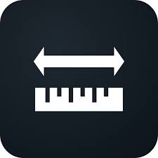

PENGERTIAN KONVERTER SATUAN
Konverter satuan adalah alat atau program yang digunakan untuk mengubah nilai suatu besaran dari satu jenis satuan ke satuan lainnya tanpa mengubah kuantitas asli dari objek tersebut.
Apa itu konverter satuan, dan untuk apa?
mari kita bahas bersama

gambar #1
Konverter satuan adalah alat atau program yang digunakan untuk mengubah nilai suatu besaran dari satu jenis satuan ke satuan lainnya tanpa mengubah kuantitas asli dari objek tersebut.
| Satuan Asal | Kilogram (Kg) | Gram (g) | Pon (lbs) | Ons (Oz) |
|---|---|---|---|---|
| 1 Kilogram | 1 | 1000 | 2.204 | 35.273 |
| 1 Gram | 0,001 | 1 | 0,0022 | 0,035 |
| 1 Pon | 0,453 | 453,59 | 1 | 16 |
| 1 Ons | 0,028 | 28,349 | 0,062 | 1 |